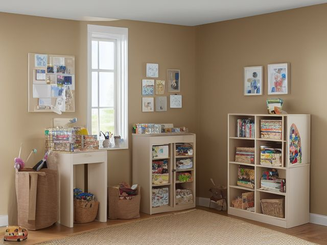

Family Room micro zone
The Craft and Activity Zone
Hold craft supplies grouped by activity so a project can start in one motion and the surface can be cleared for dinner just as fast.
One session: 45-75 min. most of it in Sort, testing every marker and opening every kit

What done looks like
Four lidded, labeled bins (paper and card, drawing, glue and tape, kits in progress), scissors standing point down in a cup out of the youngest child's reach, one completely clear work surface, and exactly one project bin out on it.
Check these before you start
- Burn or fireA glue gun left plugged in on the table after everyone walks away. The tip holds enough heat to burn a hand or scorch the surface long after the last bead of glue.
- Fall, cut, or crushCraft knives and sharp-point scissors stored blade up in a cup, or left flat on a work surface a child reaches across from the other side.
- Poison, choke, or strangleSeed beads, googly eyes, and pompoms live in the same open room as a crawling child, and craft glue and solvent based markers belong on a high shelf rather than in a floor-level bin.
What to have on hand before you start
These are types of thing, not brands. If you already own something that does the job, that is the right one to use. Each says which pass needs it and what to watch out for.
- Color-coded microfiber cloth set ×12
Wipe, dust, and dry surfaces, in the Shine pass.
Wash by use color; avoid fabric softener. - Neutral pH multi-surface cleaner
Routine cleaning of sealed surfaces, in the Shine and Sustain passes.
Verify surface compatibility; lock around children and pets. - Compact vacuum with attachments
Remove dust, crumbs, and debris, in the Shine pass.
Use appropriate attachment. - Keep, Relocate, Donate, Recycle, Trash container set ×5
Support rapid item routing during Sort, in the Sort pass.
Do not block exits. - Portable cleaning caddy
Transport and contain cleaning inputs, in the Straighten, Shine and Sustain passes.
Secure chemicals from children and pets. - Portable label maker
Create durable standardized labels, in the Standardize and Sustain passes.
Follow surface and adhesive guidance. - Removable write-on labels
Create temporary or adjustable visual controls, in the Standardize pass.
Test on delicate finishes.
Only if your craft area has one: 8 more
Not every craft area needs these. Each one is here because some do, and the reason is next to it.
- Pegboard Panel System
Create visible tool and supply homes, in the Straighten, Standardize and Sustain passes.
Do not overload; anchor wall-mounted or tall systems where required. - Board Game Component Bags
Keep game pieces complete, in the Straighten, Standardize and Sustain passes.
Do not overload; anchor wall-mounted or tall systems where required. - Portable Project Tray ×2
Contain one active project and its parts, in the Straighten, Standardize and Sustain passes.
Do not overload; anchor wall-mounted or tall systems where required. - Controller Dock
Charge and contain game controllers, in the Straighten, Standardize and Sustain passes.
Do not overload; anchor wall-mounted or tall systems where required. - Remote Control Tray
Create one visible home for controls, in the Straighten, Standardize and Sustain passes.
Do not overload; anchor wall-mounted or tall systems where required. - Toy Bin with Picture Label ×4
Support independent child cleanup, in the Straighten, Standardize and Sustain passes.
Do not overload; anchor wall-mounted or tall systems where required. - Front-Facing Book Bin ×2
Display children's books for easy access, in the Straighten, Standardize and Sustain passes.
Do not overload; anchor wall-mounted or tall systems where required. - Shelf Location Label Set
Standardize location naming, in the Standardize and Sustain passes.
Install and use according to product instructions.
The six passes, in order
Work them in this order. Sorting after you have arranged things means arranging things you were about to remove.
Sort
Decide what stays. Everything else leaves the zone now.
Test every marker on a scrap of paper, because the cap tells you nothing and the scrap tells you everything. Throw the dried glue sticks, the paint that has separated and will not stir back together, and any kit whose instruction sheet is gone and cannot be found online.
Straighten
Give what stays a home, placed where the hand actually reaches.
Pack the bins by what gets made, not by what the material is, so the drawing bin holds paper, pencils, and the sharpener together rather than sending a child to three shelves. One lidded bin lifts out and carries to the table in one hand, and goes back the same way.
Shine
Clean it, and use the cleaning to inspect what you cannot see when it is full.
Scrape dried glue and paint off the work surface with a plastic scraper before you wipe, get into the cracks where glitter sits, and stand the brushes bristle up so they dry without bending.
Surface by surface, all 7 of them, with what to use on each.
Safety
Make the zone safe for everybody who uses it, including the shortest person.
The glue gun is the real hazard here. It has no obvious off signal, its tip stays hot long after the last bead, and it gets left plugged in on a surface a child can reach. Give it a fixed cooling spot on a hard tile and unplug it before you clean up, not after. Keep the craft knife, the seed beads, and anything solvent based on a high shelf, not in a floor-level bin.
Standardize
Write down the best way you know today, so it survives you forgetting.
One project out at a time, and the label on the front of each lidded bin names what it makes rather than what it holds. That rule is what stops the work surface from filling.
Sustain
Attach the reset to something that already happens, so it keeps itself.
When the table is being set for dinner, the open project bin closes and goes back on the shelf, whatever state the project is in.
The half-finished project
There is a bag or a box here holding something started with real enthusiasm and abandoned somewhere in the middle, and it has held the good end of the work surface for months. The problem is that clearing it feels like quitting, so it stays and nothing else gets started. Use this test, out loud, project by project. Name the very next physical action and name the day you will do it. Not the goal, the action. Cut the second sleeve. Buy the size four needles. If you cannot produce both halves without stalling, the project is finished, and it finished a while ago without telling you. Break it down. The good materials go back into the paper, drawing, and glue bins where the next project can use them. The partly worked piece goes to somebody who will finish it, or it goes out. And you get back the one thing this zone is actually short of, which is a clear surface for the project that has enthusiasm behind it right now.
Cleaning it properly, surface by surface
Dried glue and glitter defeat a wet cloth, so scrape and lift the dry mess first, then wipe. Work from the surface down into the seams and finish on the floor.
Work down, not across. Whatever comes off a high surface lands on the one below it, so cleaning the floor first means cleaning it twice.
Carry these in with you. Compact vacuum with attachments; Neutral pH multi-surface cleaner; Color-coded microfiber cloth set; Portable cleaning caddy; Plastic scraper (not in this zone's list, needed to lift dried glue and paint); Soft detail brush (not in this zone's list, needed for glitter in seams).
- The work surface top
Scrape dried glue and paint off with a plastic scraper first, then wipe the whole surface with neutral pH cleaner and dry it, so the next project starts on clean wood. - The cracks and seams in the work surface
Vacuum or brush the glitter and dried flecks out of the seams and joins where a cloth just skates over them, using a soft detail brush to lift what is wedged in. - The bin lids and labels: paper and card, drawing, glue and tape, kits in progress
Wipe each lid and its label with a barely damp cloth, then dry, so the labels stay readable and the lids seal flat. - The bin interiors
Tip out and wipe the inside of each bin, since crumbs of dried glue, loose beads, and pen lids collect in the corners. - The brushes and the scissor cup
Wash the brushes clean and stand them bristle up to dry without bending, and wipe out the cup that holds the scissors point down. - The glue gun cooling spot on its hard tile
Once the gun is unplugged and cold, peel the dried glue strings off the tile and wipe it, so its fixed spot stays clear for next time. - The floor under and around the table
Vacuum the floor thoroughly, working the corners, because beads, glitter, and paper scraps travel further here than anywhere else in the room.
Inspect as you clean. Cleaning is the only time you see the zone empty, so use it.
- A scorch mark or a melted ring on the surface where the glue gun sits and cools.
- A glue gun cord with a cracked or heat-stiffened sheath near the tip end.
- A leaking glue or marker bottle staining the base of a bin, or a solvent smell where a cap has failed.
- A scissor or tool cup that tips easily, ready to spill points onto the shared floor.
- Seed beads, googly eyes, or pompoms that have escaped onto the floor a crawling child uses, all choke sized.
The standard that keeps it fixed
Four lidded bins labeled by what they make, one project bin out on a clear surface, the glue gun unplugged on its tile, and knives, beads, and solvents above the youngest child's reach.
Reset trigger. When the table is being set for dinner.
The rest of the family room, in working order
Each of these is one session on its own. Finish this zone before you open the next.
- The Primary Media Zone
- The Toy and Play Zone
- The Board Game and Puzzle Zone
- The Blanket and Comfort Zone
- The Charging and Device Zone
- The Craft and Activity Zone, you are here
The Family Room in full, with what each of the 6 zones is for
Related reading
- What is 6S?
- This zone's safety pass, in full
- Is one spot in this zone always the one you skip?
- Why this zone gets messy again
- Decluttering vs. organizing
- Before you buy storage for this zone
- Still does not fit, even after the honest count?
- Does something in this zone actually get used somewhere else?
- Stuck on one item in this zone?
- Written the standard, but nobody else follows it?
- Does everyone in the house agree what "done" looks like here?
- Does more than one person use this zone?
- Found a duplicate of something in this zone?
- Why the standard above names one home per category
- Is the everyday item in this zone actually the easy one to reach?
- Not sure whether to keep something in this zone?
- Does this zone keep running out of something?
- Started this zone and stalled partway through?
- Have you stopped noticing the clutter in this zone?
When you want it off the screen
Carry The Craft and Activity Zone into the room
The method above is complete and free. The Whole House Print Pack puts The Craft and Activity Zone and the other 113 micro zones on 684 printable cards, so the steps you just read are not stuck behind a phone screen while your hands are full.
The Print Pack, 19 dollarsJust this zone, 4 dollarsOr draw a card free
The Craft and Activity Zone on its own is 4 dollars for 6 cards. All 114 micro zones is 19 dollars for 684. The whole house is the better buy; the single zone is here so you can take only what you are working on.
If The Craft and Activity Zone keeps fighting back, the real problem usually sits somewhere else in the room. A one hour virtual consult is 250 dollars: we find the function, the friction and the root cause together, and you keep a written standard for the space. See what a consult covers.